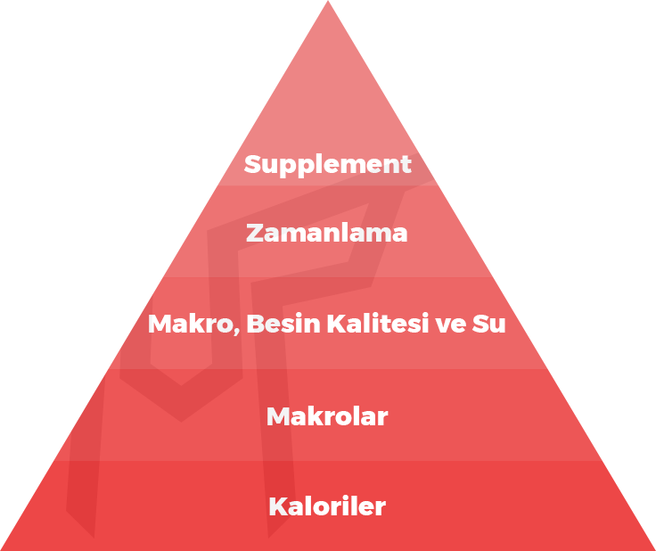
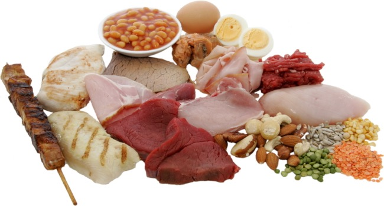
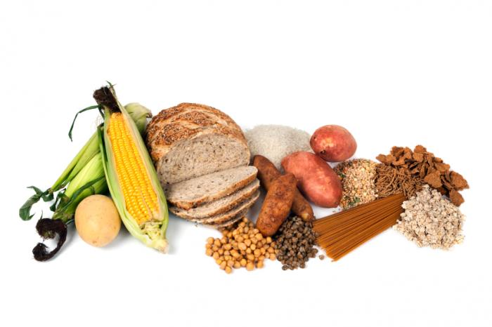

Nasıl Beslenmeliyiz
Sporcu beslenmesi veya diyet söz konusu olduğunda her kafadan bir ses çıkıyor. Bir uzmanın işe yarar dediğine bir diğeri zararlı diyor…
Bu da yetmezmiş gibi paylaşılan diyetler her gün yapılabilecek gibi değil.
Peşinen söylemeliyim ki: “Sabah, öğle, akşam bunlar yenilecek” tadında basmakalıp fitness beslenme programlarını devamlı uygulamak imkansız.
Hiçbir sporcu diyeti bu şekilde işlemiyor! Çünkü bu tip diyetleri 3 günden fazla devam ettirecek irade ve imkan kimsede yok. Gerçek hayat kağıttaki programa benzemiyor.
Peki ne yapmalıyız?
Önemli olan diyetimizde ihtiyacımız olan kalori ve makroları organize edebilmek, matematik yanılmaz!

Bu piramit önem ağırlığına göre fitness beslenme bileşenlerini gösteriyor. Bu piramidi ortaya koyan Eric Helms’e şükranlarımızı sunarak, öncelikle bu parçaların neler olduğunu tanımlayalım.
+ Kaloriler: Besinlerin enerji birimidir. Hepimizin vücut büyüklüğüne ve aktivite seviyesine göre ihtiyacı olan bir enerji miktarı vardır. Bunu hesaplamalı ve sporcu diyeti oluştururken kalorilere dikkat ederek beslenmemiz lazım. Hazırlayacağımız beslenme programının en önemli faktörü olduğu için piramitin tabanında yer alıyor.
+ Makrolar: Yediğimiz besinlerin yapı taşlarıdır. Karbonhidrat, protein ve yağları burada inceleyeceğiz. Bunların oranlarını, amacımıza göre ne kadar almamız gerektiğini öğrenmeli ve buna dikkat etmeliyiz.
+ Mikrolar: Yine besinlerle aldığımız fakat makrolar gibi gramla değil, genellikle miligramla veya daha küçük birimlerle ifade ettiğimiz organik ya da inorganik bileşenlerdir. Vitamin ve mineralleri, besin kalitesini ve su ihtiyacımızı anlamalı ve buna göre diyetimizi şekillendirmeliyiz.
+ Besin zamanlaması bölümünde amacımıza göre kaç öğün yememiz gerektiğini, günün saatlerine ve spordan önce ve sonra nasıl beslenmemiz gerektiğini inceleyeceğiz.
+ Son olarak supplementler ise gerek eksikleri tamamlama, gerek de performasımızı artırmak adına beslenme programını destekleyeceğimiz gıdalardır.
Kas Geliştirme ve Yağ Yakma Konusunda Bilmeniz Gerekenler
Vücut geliştirme beslenme programı arıyorsanız iki amacınız olabilir: kas geliştirme veya yağ yakma! Yağ ve kas farklı dokulardır. İkisini de kolay kazanamaz, kolay da kaybedemeyiz. Bu faaliyetler süreç ister. Bu süreci merak ediyor musunuz? Etmiyorsanız da etmelisiniz, çünkü bu önemli! Çünkü bu bir fitness beslenme programı için anlaşılması gereken en önemli ilk şeydir! fitness tartılma Popüler bir diyeti takip edip kısa sürede yağ yakanlar ya da hafta sonu kaçamakları ile hızlı şekilde kilo alanlar bunların hızlı olduğunu sanır. Ama maalesef böyle değil… Tartıdaki oynamalar kas ve yağ dokusunun kazanımı ya da kaybından daha çok su ve glikojen (besinlerin depo hali) dalgalanmalarından dolayı olur. Kısa sürede tersine dönebilir. Yani ne kası ne yağı öyle kolay kolay kazanmazsınız da, kaybetmezsiniz de. Zayıflamak ve yağ kaybetmek için de, kas geliştirmek için de sabırla beslenme programımızı takip etmeliyiz. İstediğimiz gibi gitmezse düzenlemeler yapmayı bilmeliyiz. Diyet kadar önemli olan bir diğer şey de iyi bir antrenman programı!

Sporcu Diyeti Protein İhtiyacı
Protein antrenmandan sonra kaslarımızın yenilenmesi ve büyümesi için önemlidir. Bu yüzden ne zaman sporcu beslenmesi desek, o zaman protein konu oluyor 🙂 1 gram protein 4 kcal enerji sağlar. Ayrıca en doyurucu ve termik etkisi yüksek makro protein olduğu için diyetimizde önemlidir, fakat abartıp çok fazla protein tüketmemiz birkaç farklı perspektiften dolayı bize pahalı gelebilir. Amacı yağ yakma olanların kalori açığı oluşturdukları için protein ihtiyaçları daha fazla olur. Çünkü fazla kalori alarak beslendiğimizde vücudumuz zaten rahatını bozmuyor ama az kalori aldığımızda vücut katabolik olacağı için proteinin kıymeti daha da artıyor. Proteinin faydaları: 1. Protein turnover’i ve pozitif nitrojen dengesini artırır: Dokularımız yıpranan proteinlerin yerini yeni proteinler sentezleyerek doldurmalıdır. Protein alımı bunu artırır, bu da kas yapar. 2. Proteinin termik efekti yüksektir: Yağların sindirimi için %2-3’ü, karbonhidratların sindirimi için %6-8’i harcanırken, proteinlerin sindirimi için getirdiği enerjinin %25-30’u harcanır. Yani fazla yiyorsak, bunu proteinden yememiz tok tutar, kilo aldırmaz. 3. Growth faktörleri, Glukagon gibi kas geliştirme ve yağ yakma hormonlarını artırır. 4. Vücudu destekleyen ek gıdaları artırır: CLA, BCAA, kreatin, l-karnitin, l-glutamin gibi faydalı bileşenler protein içeren gıdalarda bulunur. Yeterli protein alındığında bunların dışardan desteklenmesine çok da gerek yoktur. Bu sebeplerden dolayı, protein önemli bir gıdadır.

Sporcu Beslenmesi Yağ İhtiyacı
Yağlar sağlıklı yaşamamız için oldukça önemlidir. Gram başına 9 kcal enerji verirler. Yoğun kalori içerdikleri için yağ yakmak isteyenler fazla tüketiminden kaçınabilir, kas geliştirmek isteyenler ise tercih edebilirler. Özellikle kilo almak istiyorsak veya tecrübeli bir sporcuysak ve bulk dönemi için kalorileri artırmak istiyorsak, daha fazla yağ tüketebiliriz. Amacımız ne olursa olsun, yağsız vücut kütlemizin her kilogramı için, en az 1 gram yağ tüketmeliyiz. Bu vücudumuzun sağlıklı şekilde işleyişini devam ettirmesi için önemlidir. Yağlar zararlı mı? Yağlandırır mı? Vücudumuzun yağlanması genel olarak fazla enerji alımından dolayı gerçekleşir. Doğrudan bir gıdaya “kilo yapıyor” diyemeyiz. Fakat yağlar yoğun enerji içerdikleri için (1 gramda 9 kcal) kilo alımına neden olabilirler. Genel olarak kilo başına 1 gram yağ tüketimini aşmamak, fazla kilo almak istemeyenler için iyi bir hedeftir.

Sporcu Beslenmesinde Karbonhidrat İhtiyacı
Karbonhidratlar, protein ve yağlar gibi vücudumuz için olmazsa olmaz makrolar değillerdir; fakat özellikle spor yapan insanlar için enerji ihtiyacımızı karşılamamız, glikojen depolarını doldurmamız ve bazı hormonlar için önemlidirler. Gram başına 4 kcal enerji sağlarlar. Düşük karbonhidrat genel olarak yağ yakmak isteyenler için, yüksek karbonhidrat da kas geliştirmek isteyenler için uygun olacaktır. Fakat aşırı düşük karbonhidrat diyeti sporcular için çok verimli diyemeyiz. Günlük protein ve yağ ihtiyacımızı aldıktan sonra kalan kalori ihtiyacımızı karbonhidrat kaynaklarından karşılayabiliriz. Karbonhidratlar kilo yapar mı? Vücudumuzun yağlanması genel olarak fazla enerji alımından dolayı gerçekleşir. Doğrudan bir gıdaya “kilo yapıyor” diyemeyiz. Fakat karbonhidratlar genellikle fazla yenmeye müsaittir, araştırmalar aslında sandığımızdan daha fazla yediğimizi gösteriyor. Ayrıca karbonhidratların insülin tepkisi genellikle fazla oluyor, yani yağ yakımını azaltıp yağ depolamayı artırıyor. Bu yüzden yağlanmamak için yüksek glisemik indeks değeri olan ya da işlenmiş karbonhidratları azaltmalı; genel olarak miktar kontrolü yapmalıyız.